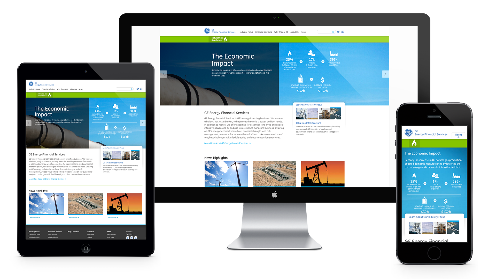

Hello, my name is Doug Kulak. I am a digital solutions architect with an extensive background in full-stack web development and responsive web design. I have end-to-end experience working for some of Orange County's premier digital advertising agencies and have built high-traffic and mission-critical applications for clients including Google, American Express, GE, YouTube, DreamWorks, and McDonald's. I scale comfortably from high-level architecture to hands-on, tactical execution and after 20 years, I continue to focus on what I enjoy most: Learning, improving, and making awesome websites.
— specializing in —
UX/UI
Design
Frontend
Backend
DevOps

GE Energy Financial Services
Responsive Website RebuildA truly energizing project
Doug Kulak led the team to build and launch one of General Electric's first responsive websites.
- CakePHP
- jQuery
- Modernizr
- Selectivizr
- RespondJS
- jQuery
- HTML5
- CSS3
- Zurb Foundation
- Google Sheets
Irvine Company Retail
Responsive Website RebuildWhere luxury meets technology
Doug Kulak led the team to develop a fully responsive, full CMS website for The Irvine Company's retail division.
- ASP.NET
- C#
- Umbraco CMS
- Bootstrap
- AngularJS
- jQuery
- HTML5
- CSS3
- Hangfire
- Pivotal
- Google Tag Manager
Francisco Bread
Responsive Website RebuildDelivering the recipe for success
Doug Kulak architected and developed Bimbo Bakeries' first responsive website with Drupal.
- PHP
- Drupal
- Zen
- jQuery
- Selectivizr
- HTML5
- CSS3
SmartStop Self Storage
Responsive Website RebuildNew digital leaders in self-storage
Doug Kulak assembled and led a team of developers to launch SmartStop's first responsive and mobile-first website.
- CakePHP
- Custom CMS
- Bootstrap SASS
- Modernizr
- jQuery
- AngularJS
- HTML5
- CSS3
- Google Tag Manager
Let's work together.
Download Resume© 2023 Kulak Consulting LLC
dougkulak@gmail.com
(530)500-2220
@dougkulak